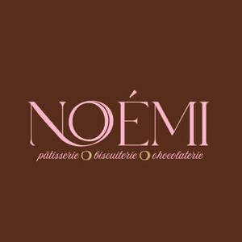
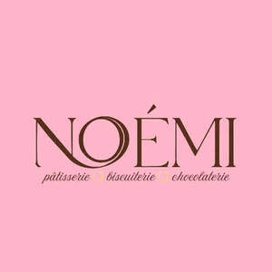

Trade Mark Journal No.2025/025 20 June 2025
UK00004212093 31 May 2025 (29,30)
Mark 1

Mark 2

- Class 29
- Buttercream; Lemon curd; Fruit-based fillings for cakes and pies; Fruit pie fillings; Chantilly cream; Cream; Whipped cream; Cream (Whipped -); Dairy desserts; Jellies for food, other than confectionery; Chilled dairy desserts; Fruit desserts; Desserts made from milk products; Dairy puddings; Milk-based beverages flavored with chocolate; Clotted cream; Whipping cream; Cream, being dairy products; Cream [dairy products]; Strawberry jam; Raspberry jam; Rhubarb jam; Blackberry jam; Plum jam; Cranberry jam; Jams; Ginger jam; Blueberry jams; Fruit jams; Jellies, jams, compotes, fruit and vegetable spreads; Marmalade; Fruit marmalade; Compote; Cranberry compote; Marmalades; Jellies; Honey butter; Almond jelly; Apple butter; Fruit preserves; Chocolate nut butter; Butter (Chocolate nut -); Jellies for food; Fruit jellies [not being confectionery]; Cashew nut butter; Peanut butter; Butter (Peanut -); Almond butter; Coconut butter; Butter (Coconut -); Butter made of nuts; Butter (Cocoa -); Cocoa butter; Nut toppings; Cocoa butter for food; Cacao butter for food; Nut paste spreads; Cashew nuts (Prepared -); Prepared macadamia nuts; Candied nuts.
- Class 30
- Croissants; Almond pastries; Pastries; Pâté [pastries]; Brioches; Chocolate pastries; Viennoiserie; Pastry; Savory pastries; Pastries with fruit; Fruit pastries; Pastries, cakes, tarts and biscuits (cookies); French toast; Puff pastry; Butter biscuits; Eclairs; Jam filled brioches; Pastries filled with fruit; Shortbread biscuits; Prepared desserts [pastries]; Pastries containing fruit; Macarons; Biscuits; Biscuits flavoured with fruit; Chocolate covered biscuits; Almond cake; Biscuits having a chocolate flavoured coating; Pastries containing creams and fruit; Biscuits with an iced topping; Bread (Ginger -); Ginger bread; Shortbread; Madeleines; Profiteroles; Savoury biscuits; Custard tarts; Cream buns; Dessert souffles; Tiramisu; Treacle tarts; Shortbread with a chocolate flavoured coating; Chocolate topping; Blueberry pies; Meringue; Shortbread with a chocolate coating; Chocolate cake; Custard-based fillings for cakes and pies; Pavlovas made with hazelnuts; Treacle cake; Caramel; Shortbreads; Chocolate cakes; Chocolate desserts; Custards [baked desserts]; Meringues; Shortbread part coated with chocolate; Sugar almonds; Almond cookies; Pains au chocolat; Gâteaux; Chocolate coated biscuits; Chocolate biscuits; Half covered chocolate biscuits; Wafers; Wafer biscuits; Chocolate wafers; Wafers [biscuits]; Salted wafer biscuits; Chocolate covered wafer biscuits; Flan base wafers; Rolled wafers [biscuits]; Chocolate caramel wafers; Biscuits having a chocolate coating; Dulce de leche; Crème brûlée; Crème brûlées; Petit fours; Crème caramel; Scones; Biscotti; Biscotti dough; Savory biscuits; Malt biscuits; Gingersnaps; Fruited scones; Biscuits containing chocolate flavoured ingredients; Biscuits [sweet or savoury]; Chocolate truffles; Chocolate confectionery having a praline flavour; Pralines made of chocolate; Chocolate decorations for cakes; Chocolate; Pastry dough; Iced cakes; Iced sponge cakes; Cookies; Filled cookies; Dough; Gingerbread; Sponge cake; Cakes; Breakfast cake; Cake preparations; Cream cakes; Sponge cakes; Deep chocolate cake made with chocolate sponge; Fruit cakes; Chocolate covered cakes; Chocolate-based fillings for cakes and pies; Sponge fingers [cakes]; Strawberry gateaux; Dessert puddings; Chocolate for confectionery and bread; Pralines; Chocolate confectionery containing pralines; Chocolates in the form of pralines; Pralines with liquid filling; Chocolate confections; Mousse confections; Chocolate coated macadamia nuts; Chocolate mousses; Chocolate coated nougat bars; Chocolate flavoured confectionery; Liqueur chocolates; Chocolate confectionery; Shortbread part coated with a chocolate flavoured coating; Chocolate coated nuts; Wafered pralines; Truffles [confectionery]; Almond confectionery; Chocolate for toppings; Chocolate creams; Nougat; Mousse (sweet); Marshmallow filled chocolates; Chocolate-coated nuts; Almonds covered in chocolate; Chocolate pastes; Chocolate bars; Gateaux; Petits fours [cakes]; Mousses (Chocolate -); Tortes; Puddings for use as desserts; Chocolate marzipan; Puddings; Fondants [confectionery]; Viennese pastries; Mousses; Iced fruit cakes; Christmas puddings; Fondants; Chocolate fillings for bakery products; Cheesecakes; Prepared desserts [confectionery]; Chocolates; Cheesecake; Mille-feuilles; Flans; Tarts; Tarts [sweet or savoury]; Milk chocolate; Milk chocolate bars; Dairy chocolate; Hot chocolate; Chocolate bunnies; Chocolate eggs; Chocolate candy with fillings; Chocolate coating; Chocolate coated fruits; Chocolate confectionery products; Confectionery chocolate products; Filled chocolate; Confectionery items coated with chocolate; Filled chocolate bars; Beverages made with chocolate; Beverages made from chocolate; Chocolate based drinks; Drinks containing chocolate; Chocolate decorations for confectionery items; Confectionery items formed from chocolate; Drinks prepared from chocolate; Truffles (rum -) [confectionery]; Chocolate candies; Chocolate fudge; Chocolate-coated berries; Marshmallow creme; Marshmallow; Creme brulees; Marshmallow confectionery; Creme caramels; Cream puffs; Bonbons; Shortcake; Fudge; Apple tarts; Chocolate topped pretzels; Caramels [sweets]; Fruit filled pastry products; Shortcrust pastry; Custards; Icing; Icings; Mirror icing [mirror glaze]; Filo pastry; Pastry shells; Filo dough; Custard; Covered tarts; Mincemeat pies; Pastry cases; Vermicelli; Chocolate vermicelli; Petit-beurre biscuits; Filled biscuits; Biscuits containing fruit; Sweet biscuits for human consumption; Icing for cakes; Dough for cakes; Tart shells; Phyllo dough; Cream pies; Bakery goods; Gluten-free bakery products; Danish pastries; Flour confectionery; Confectionery; Cocoa-based ingredients for confectionery products; Nut confectionery; Chocolate fondue; Pies [sweet or savoury]; Sweet glazes and fillings; Prepared desserts [chocolate based]; Chocolate sauces; Filled chocolates; Filled caramels; Pastries containing creams; Orange based pastry; Chocolate spreads containing nuts; Bread; Chocolate-covered nuts; Chocolate spreads for use on bread; Bread casings filled with fruit; Breads; Dairy confectionery; Confectionery in the form of mousses; Fruit confectionery; Cake doughs; Fruit jellies [confectionery]; Jellies (Fruit -) [confectionery].
Rebecca Pretty